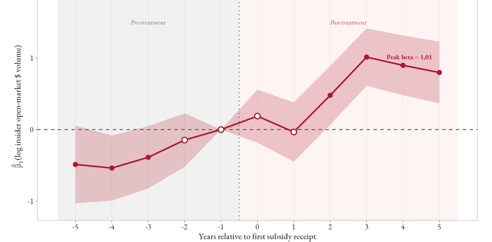

Subsidies as Attention Shocks and Their Impact on Insider Activity
with J. A. Pérez-Amuedo, R. Houston and M. K. Hassan
Under review, Financial ManagementFMA 2026 Annual Meeting
Government subsidies bring firms attention, not information. Analyst coverage rises after a first award, but what analysts say does not change. Insiders are the ones who react: their open-market trading rises 47 percent and tilts toward selling, and those sales predict returns less well than ordinary insider sales.
Abstract
How do government subsidies shape the information environment of public firms? Linking public subsidy data to analyst data and SEC Form 4 insider transactions for U.S. public firms over 2000 to 2023, we show that subsidies operate as attention events rather than information events. Analyst coverage intensity rises by approximately 4.8 percent in a panel OLS, and by 8.7 percent in a matched difference-in-differences design over the five-year award window following the first receipt. The effect builds for three years post-award and scales with award size. Yet the content of analyst output does not change. Consensus recommendations show a contemporaneous improvement, but no causal effect in the matched design, and forecast disagreement is flat once dispersion is scaled by the consensus mean. Insiders respond decisively, with open-market trading volume rising 47 percent after subsidies, tilting toward net selling, and concentrating in opaque firms where outside evaluation is hardest. These post-award sales are less predictive of future returns than ordinary insider sales, consistent with opportunistic selling around subsidy-driven attention rather than informed trading.

